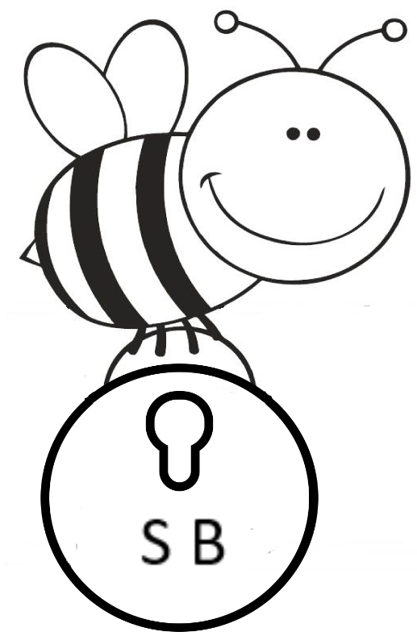

S
ecure
B
ee

Sua plataforma de mensagens seguras.
Utilizar o site da SecureBee é uma experiência rápida e fácil.
Destinada a todas as idades, a SecureBee utiliza um mecanismo denominado
Cifra de César
para tornar secreta a sua mensagem.
Sabemos que as abelhinhas, na natureza, são importantes polinizadoras e fazem constantemente o papel de transportar os pólens de
uma flor masculina para uma flor feminina. As abelhinhas da SecureBee, carregam o número de pólens (deslocamento das letras)
que o usuário escolher e assim, conseguem fazer o mesmo papel das abelhinhas polinizadoras. Elas voam de uma flor para a outra
transportando a sua mensagem até um ambiente seguro com a opção "polinizar", cifrando e tranformando-as em um conjunto
embaralhado de letras. As abelhinhas da SecureBee também são ensinadas a voarem de volta para a flor inicial dezembaralhando
e decifrando a sua mensagem com a opção que aqui denominamos "depolinizar".
Selecione a opção "retornar a colmeia" para digitar novamente a sua mensagem e reiniciar a seleção do número de pólens.
Escolha o número de pólens que a sua abelhinha vai carregar:
Atenção o número de pólens funciona como um número de segurança, para decifrar (opção despolinizar)
a mensagem é necessário inserir o mesmo número de pólens que você utilizou para cifra-la (opção polinizar).
Agora, digite a mensagem que a abelhinha irá carregar:
Pronto! Agora escolha se deseja polinizar (cifrar) ou despolinizar (decifrar) a sua mensagem:
POLINIZAR
DESPOLINIZAR
Que
Bee
leza, você polinizou a flor e sua mensagem agora é:
Sua abelhinha retornou a flor de origem com a seguinte mensagem:
RETORNAR A COLMEIA